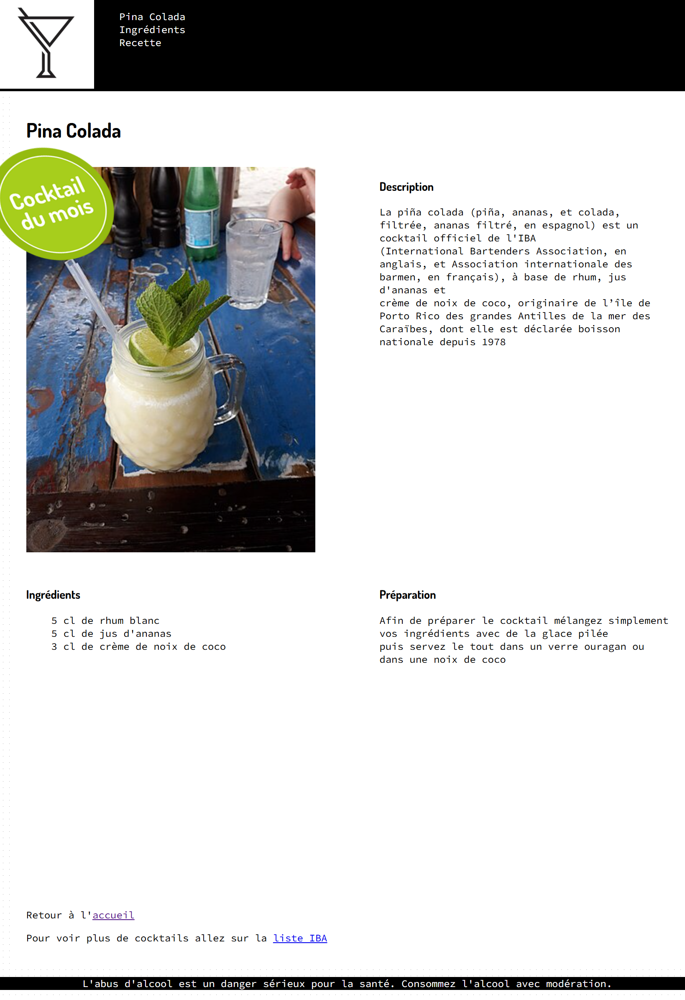
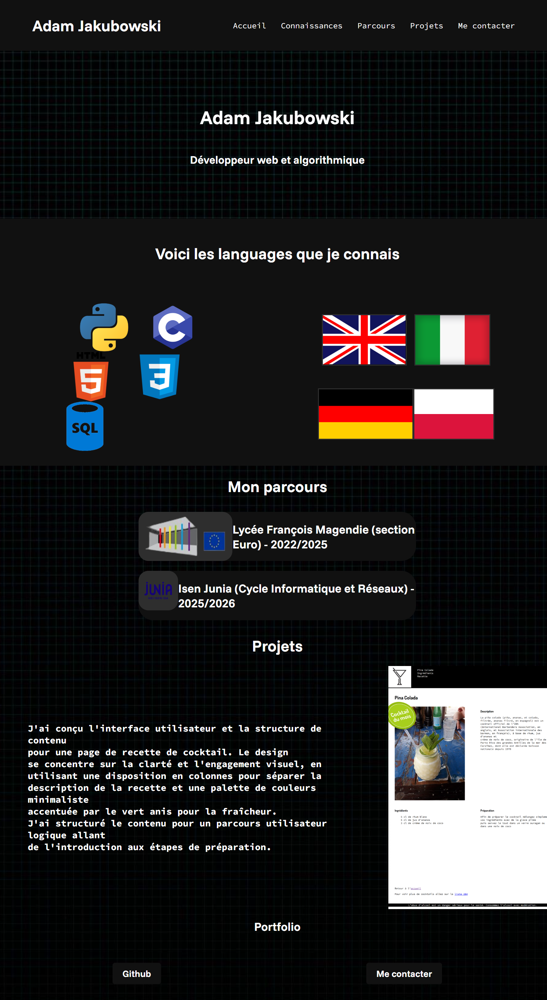

Adam Jakubowski
Développeur web et algorithmique
Voici les languages que je connais


Mon parcours
Lycée François Magendie (section Euro) - 2022/2025
Isen Junia (Cycle Informatique et Réseaux) - 2025/2026
Projets
J'ai conçu l'interface utilisateur et la structure de contenu pour une page de recette de cocktail. Le design se concentre sur la clarté et l'engagement visuel, en utilisant une disposition en colonnes pour séparer la description de la recette et une palette de couleurs minimaliste accentuée par le vert anis pour la fraîcheur. J'ai structuré le contenu pour un parcours utilisateur logique allant de l'introduction aux étapes de préparation.

